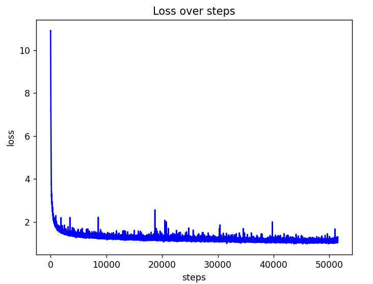

TAMIL_GPT.HTML
Here's how I trained a GPT in 4 hours on a single NVIDIA RTX a4000(16GB).
I started by implementing nanoGPT by Karpathy Sensei. nanoGPT is a 12-layer GPT2 which was trained on 8 NVIDIA a100(80GB). All I had was a single NVIDIA a4000 which my uni was ready to lend me for a day :(
I stumbled across modded-nanoGPT: A repo trying to speedrun the training of nanoGPT. They "modded" nanoGPT with QK-normalization, rotary embeddings, skip connections, etc...
I applied these changes to my GPT hoping it would reduce my training time:
1) QK-normalization: If the QK matrix is not normalized, we can encounter an explosion on a certain dimension(s) in the logits. This might silence other signals, making it harder to learn.
2) Skip connections: The first block is connected to the last block, the second block is connected to the second last, and so on.
3) Rotary embeddings: Usually, positional embeddings are added before QK matrix projection. Rotary embedding adds positional information after QK matrix projection using a rotation matrix, which results in a more uniform/predictable encoding of positional information.
4) Weight initialization: Reduces the chance of exploding or vanishing gradients.
5) ReLu^2 and multiples of 2: ReLu^2 performs slightly better than GELU and keeping the size of the embedding layer in multiples of 2 increases performance.
I started training at 12:00 PM and the GPT crunched around 580 million tokens(dataset) in 4 hours.

We can do better!
1) Muon optimizer: This optimizer has been used in modded-nanoGPT for optimizing hidden matrices. I didn't have enough time to play around to find ideal hyperparameters so I used my good old friend Adam.
2) Multi-head latent attention: Used in Deepseek v3, reduces memory overhead while giving good performance.
You can find the code here and the weights here.